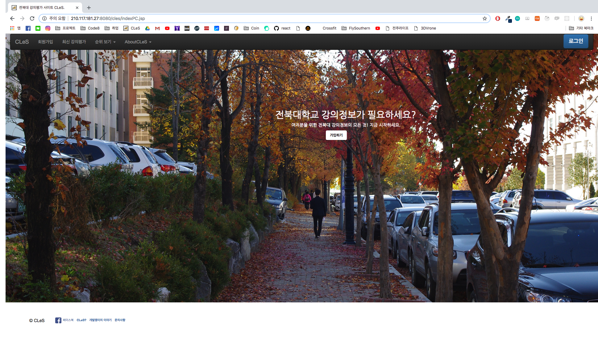

자기소개 섹션
약력 섹션
- 2010 : 전북대학교 상과대학 경영학과 입학
- 2011 ~ 2012 : 군 복무
- 2014 : SCSC 과정을 통한 컴퓨터공학 부전공 시작
- 2016 : 전북대 강의평가 시스템 CLeS 개설
- 2017 : 헤지펀드 분석사이트 DittoFund 개설
- 2017 : 전북대학교 졸업
대학 생활
- 2017 : 서울 IT 스타트업 '빅러스터' 입사
- 2017 : 서울 IT 스타트업 '빅러스터 퇴사
서울 생활
- 2018 : 전주 IT 스타트업 '코드에잇' 결성
- 2018 : 전주 가맥축제 웹사이트 제작 및 운영
- 2019 : 전주 코딩 교육 시스템 개설
코드에잇
포트폴리오 섹션


전북대학교 강의평가 CLeS
헤지펀드 분석사이트 Dittofund
컨택트 섹션